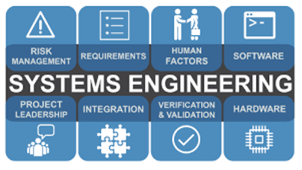
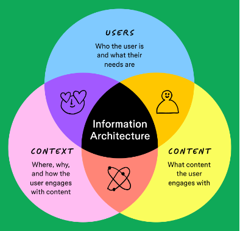

System engineering according to NASA is a “methodical approach for the design and operations of a system” whenever there is anything being used it needs all parts to work together to function.
In a system design there is “mission objectives, constraints, design drivers, operational objectives”. All of this is needed to create a system design and to see if it will work and function. This is important because a system needs to work to be able to be friendly to any user.

Information architecture is important to have so that when a user goes onto a website the website is meeting the user’s goals.
According to Yale University there is object-based, action-based and audience-based labels in navigation. When creating a website, it is important to know the goal of the website, who the audience and categorize any content.
User experience and design is ensuring that the design is easily able to be used, responds and works well with users.
According to IBM this data is collected through “interviews, surveys and testing.” Professionals in UX look through any mistakes that a website might have and try to fix this.
It is important for a UX design to be good because it will stand out more than other designs if customers are happier with it. IBM also talks about there will be higher conversion rates, strong brand reputation and reduced support costs.
BBC talks about how much misinformation and disinformation has caused people to believe untrue information especially on social media.
Misinformation is by mistake that someone spreads the false information without meaning to on purpose and doesn’t intend to cause any harm on the other hand disinformation is when someone intends to share information they know isn’t true and does it anyways.
A way to try to protect yourself is by trying to find trusted sources that can fact check and give the same story.
NASA (2019) Fundamentals of Systems Engineering
NASA (2019) System Design Processes
Yale (N.D) Information Architecture Principles
BBC (N.D) Misinformation vs Disinformation